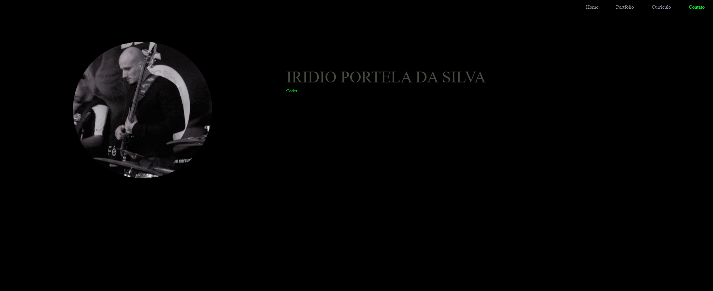

Meu Portfolio
Descrição do Projeto
"Apresentar meu próprio portfolio como projeto inicial, aparentemente pode soar como simples, porém, para um iniciante e amante de tecnologia sem experiências de campo, é um tanto desafiador."
"Este projeto nasceu, se desenvolveu, e continuará a crescer, através da sede e vontade que tenho de melhorar e evoluir como pessoa, profissionalmente e humanamente falando."
“Imagine-se como uma casa viva”. 'Deus entra para reconstruir aquela casa ... 'No início, talvez você possa entender o que Ele está fazendo. Ele está acertando os ralos e parando os vazamentos no telhado e assim por diante; você sabia que esses trabalhos precisavam ser realizados e não fica surpreso. 'Mas atualmente ele começa a bater na casa de uma maneira que dói abominavelmente e não parece fazer nenhum sentido. 'O que ele está fazendo? A explicação é que Ele está construindo uma casa bem diferente daquela em que você pensou - jogando uma ala nova aqui, colocando um andar extra ali, subindo torres, fazendo pátios. - Você pensou que estava sendo transformado em uma cabana decente: mas Ele está construindo um palácio. Ele pretende vir morar nele. - C.S. Lewis, Mero Cristianismo
⟵ Voltar ao portfolio